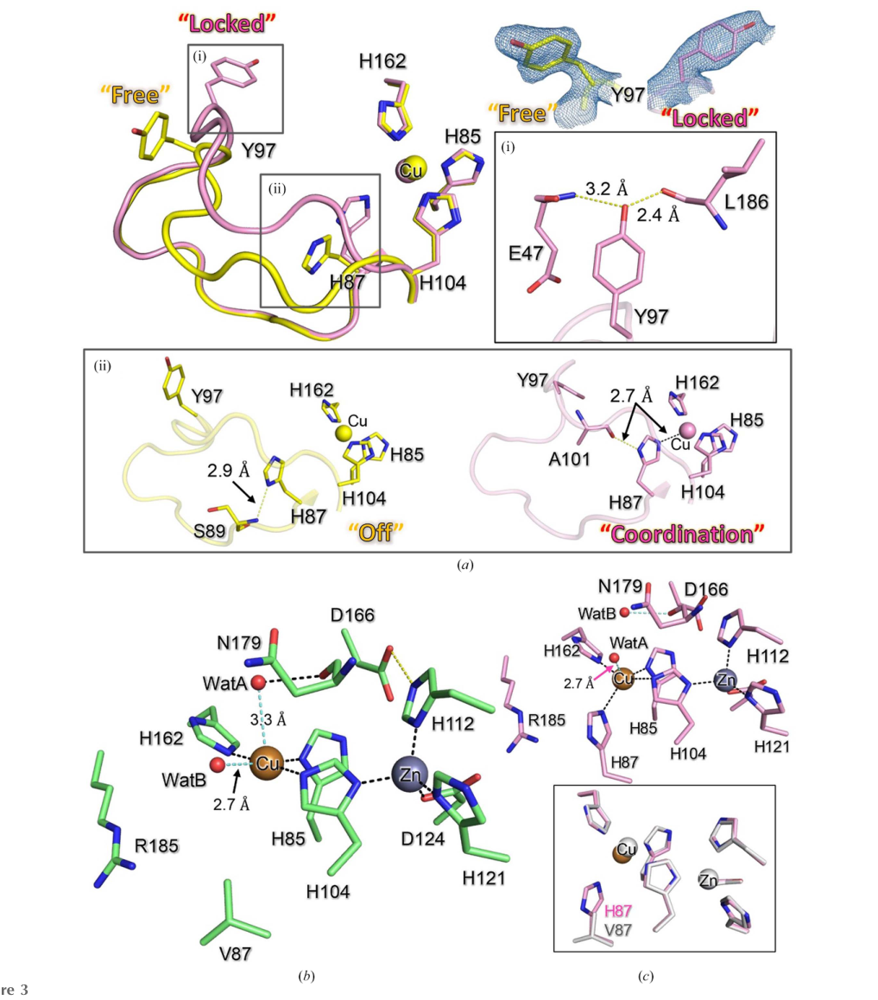

Cu/Zn superoxide dismutase family paralog from R. varieornatus with evidence of catalytic impairment. Bioinformatic analysis (file:RAMVA/RvY_13070/RvY_13070-bioinformatics/RESULTS.md) shows that while all four Cu-binding histidines are preserved at the residue level, the protein FAILS to match PROSITE PS00087 - the N-terminal H-x-H Cu coordination signature. PS00087 requires not just the catalytic histidines but also specific flanking residues that maintain the structural geometry of the Cu site loop. By analogy with the related paralog RvSOD15 (Sim & Inoue 2023, PMID:37358501), where restoring a missing histidine via V87H mutagenesis did NOT restore activity due to a flexible loop with non-canonical context, this paralog likely has impaired or absent canonical SOD activity despite retaining the catalytic residues. 193 aa (172 mature); all 4 Cu His preserved by sequence but PROSITE PS00087 fails
| GO Term | Evidence | Action | Reason |
|---|---|---|---|
|
GO:0004784
superoxide dismutase activity
|
IEA
GO_REF:0000120 |
MARK AS OVER ANNOTATED |
Summary: All four Cu-binding histidines are preserved at the residue level, but PROSITE PS00087 (the N-terminal Cu coordination signature) FAILS to match. PS00087 requires both the H-x-H motif AND specific flanking residues that maintain the structural context. This indicates divergence at the Cu site beyond just the catalytic residues themselves. By analogy with Sim & Inoue (PMID:37358501), where the V87H rescue mutant of RvSOD15 failed to restore activity due to a flexible loop with non-canonical context, this paralog likely has impaired catalytic function. The IEA annotation from Pfam family assignment is therefore probably incorrect.
Reason: PROSITE PS00087 failure indicates the canonical N-terminal Cu coordination structure is not intact, even though the catalytic histidines themselves are present. Without biochemical confirmation, the IEA SOD activity annotation should be marked as over-annotated.
Supporting Evidence:
file:RAMVA/RvY_13070/RvY_13070-bioinformatics/RESULTS.md
RvY_03757 | A0A1D1UP59 | bioinformatic verdict: PROBABLY IMPAIRED
|
|
GO:0005507
copper ion binding
|
IEA
GO_REF:0000002 |
ACCEPT |
Summary: All four canonical Cu-binding histidines are preserved at the sequence level. Copper binding is likely.
|
|
GO:0006801
superoxide metabolic process
|
IEA
GO_REF:0000002 |
MARK AS OVER ANNOTATED |
Summary: Inferred from SOD activity. Same caveats as the MF annotation.
|
|
GO:0019430
removal of superoxide radicals
|
IEA
GO_REF:0000108 |
MARK AS OVER ANNOTATED |
Summary: Inferred from SOD activity. Same caveats as the MF annotation.
|
|
GO:0046872
metal ion binding
|
IEA
GO_REF:0000002 |
KEEP AS NON CORE |
Summary: Parent term of the more specific Cu/Zn binding annotations. Both Cu and Zn binding are likely.
|
The research report should be a detailed narrative explaining the function, biological processes, and localization of the gene product. Citations should be given for all claims.
You should prioritize authoritative reviews and primary scientific literature when conducting research. You can supplement
this with annotations you find in gene/protein databases, but these can be outdated or inaccurate.
We are specifically interested in the primary function of the gene - for enzymes, what reaction is catalyzed, and what is the substrate specificity? For transporters, what is the substrate? For structural proteins or adapters, what is the broader structural role? For signaling molecules, what is the role in the pathway.
We are interested in where in or outside the cell the gene product carries out its function.
We are also interested in the signaling or biochemical pathways in which the gene functions. We are less interested in broad pleiotropic effects, except where these elucidate the precise role.
Include evidence where possible. We are interested in both experimental evidence as well as inference from structure, evolution, or bioinformatic analysis. Precise studies should be prioritized over high-throughput, where available.
The UniProt target (A0A1D1UP59) is annotated as a Cu/Zn superoxide dismutase (Cu/Zn SOD; EC 1.15.1.1). Independent literature verification confirms that the gene symbol RvY_03757.1 corresponds to a Ramazzottius varieornatus Cu/Zn SOD-family member (named RvSOD6 variant 3) but it is described as truncated, and there is no direct biochemical activity measurement reported for this specific gene product in the retrieved sources. Therefore, the safest gene-specific conclusion is that RvY_03757 encodes a Cu/Zn SOD-like protein whose canonical dismutase activity is uncertain (likely reduced/absent), while its family context strongly implicates a role in oxidative-stress biology in tardigrades. (sim2023structureofa pages 3-4)
Conclusion: Proceeding with functional annotation is appropriate only under the constraint that RvY_03757 is a Cu/Zn SOD-family paralog in R. varieornatus and appears truncated, so its activity/localization should be treated as hypothesis/inference unless directly demonstrated. (sim2023structureofa pages 3-4)
Although RvY_03757 itself is not yet an engineered protein with direct translational use in the retrieved literature, Cu/Zn SODs as a class have extensive application development.
Authoritative synthesis in 2023 emphasizes that, despite broad promise across medicine/food/cosmetics, SOD use is constrained by delivery and durability.
Given the gene’s explicit placement in the RvSOD repertoire and its truncation:
- Most conservative annotation: “Cu/Zn superoxide dismutase family protein (SOD-like), truncated; enzymatic activity uncertain.” (sim2023structureofa pages 3-4)
- Likely biological role (inference): member of an expanded antioxidant-defense gene family in R. varieornatus that contributes to oxidative stress management during extreme stress and recovery, but with the possibility that some paralogs have diverged to non-canonical functions. (sadowskabartosz2024antioxidantdefensein pages 15-16, sadowskabartosz2024antioxidantdefensein pages 13-15, sim2023structureofa pages 3-4)
| Entity (gene/protein) | Evidence type | Key finding | Biological implication | Source (paper + year + URL) |
|---|---|---|---|---|
| RvY_03757.1 (RvSOD6 variant 3) | Structural / sequence analysis | Explicitly identified in Ramazzottius varieornatus as RvSOD6 variant 3 (RvY_03757.1) and reported to be truncated; grouped among atypical Cu/Zn SOD-like genes that are nevertheless expressed in transcriptome data. (sim2023structureofa pages 3-4, sim2023structureofa media e0beceae) | Supports assignment of A0A1D1UP59 to the RvSOD family, but the truncation argues that its canonical Cu/Zn superoxide dismutase activity is uncertain or potentially reduced/lost; no direct localization or biochemical assay was reported for this specific protein in the provided literature. (sim2023structureofa pages 3-4) | Sim & Inoue 2023, Acta Crystallographica Section F — https://doi.org/10.1107/S2053230X2300523X |
| RvSOD15 (GenBank GAV02514.1) | Structural | Crystal structures of wild-type and V87H mutant were solved; protein is a Cu/Zn-containing SOD-like protein with experimentally confirmed Cu and Zn binding, but it has an unusual Val87 substitution at a canonical copper-ligand position and a flexible/disordered metal-binding loop. (sim2023structureofa pages 4-7, sim2023structureofa pages 2-3, sim2023structureofa pages 1-2) | Direct evidence that at least one R. varieornatus RvSOD family member binds Cu/Zn. However, the unusual active-site architecture suggests some duplicated tardigrade Cu/Zn SODs may have non-canonical or diminished SOD function. (sim2023structureofa pages 4-7, sim2023structureofa pages 1-2) | Sim & Inoue 2023, Acta Crystallographica Section F — https://doi.org/10.1107/S2053230X2300523X |
| RvSOD15 (GenBank GAV02514.1) | Structural / localization inference | Predicted to contain an N-terminal signal peptide, indicating that this protein is secreted. (sim2023structureofa pages 2-3, sim2023structureofa pages 3-4) | Shows that not all tardigrade Cu/Zn SOD-like proteins are necessarily cytosolic; some family members likely function in the extracellular/secretory compartment. (sim2023structureofa pages 2-3, sim2023structureofa pages 3-4) | Sim & Inoue 2023, Acta Crystallographica Section F — https://doi.org/10.1107/S2053230X2300523X |
| Cu/Zn SOD gene family in R. varieornatus | Transcriptomic | Comparative transcriptomics reported 16 putative CuZn-SOD genes in R. cf. varieornatus with cumulative expression 1533.6840 TPM. (kamilari2019comparativetranscriptomicssuggest pages 7-10) | Indicates a large and actively expressed Cu/Zn SOD repertoire, consistent with strong antioxidant capacity and likely importance in oxidative-stress management in tardigrades. (kamilari2019comparativetranscriptomicssuggest pages 7-10) | Kamilari et al. 2019, BMC Genomics — https://doi.org/10.1186/s12864-019-5912-x |
| SOD gene family in R. varieornatus | Review | Review summarizes R. varieornatus as having 17 SOD genes, exceeding the typical metazoan complement (noted as usually fewer than 10; humans have 3). (sadowskabartosz2024antioxidantdefensein pages 15-16) | Supports the view that antioxidant-gene expansion is a notable genomic feature of R. varieornatus, though expansion alone may not guarantee canonical enzymatic function for every paralog. (sadowskabartosz2024antioxidantdefensein pages 15-16) | Sadowska-Bartosz & Bartosz 2024, International Journal of Molecular Sciences — https://doi.org/10.3390/ijms25158393 |
| Atypical RvSOD paralogs in R. varieornatus | Structural / review synthesis | Several RvSOD genes besides RvY_03757.1 are described as atypical: some are truncated, while others harbor numerous mutations in copper-binding residues; the review highlights that some RvSODs may have evolved to lose SOD function. (sim2023structureofa pages 3-4, sadowskabartosz2024antioxidantdefensein pages 15-16) | Functional annotation of any single RvSOD paralog, including RvY_03757, should therefore be treated cautiously: family membership supports a Cu/Zn SOD-like assignment, but direct biochemical confirmation is lacking for many paralogs. (sim2023structureofa pages 3-4, sadowskabartosz2024antioxidantdefensein pages 15-16) | Sim & Inoue 2023, Acta Crystallographica Section F — https://doi.org/10.1107/S2053230X2300523X; Sadowska-Bartosz & Bartosz 2024, Int J Mol Sci — https://doi.org/10.3390/ijms25158393 |
| SOD repertoire in tardigrades / R. varieornatus | Review | Review states tardigrade SODs are likely distributed across mitochondria, cytosol, and peroxisomes, and frames SOD expansion as part of antioxidant defenses associated with survival under hostile conditions and recovery from cryptobiosis. (sadowskabartosz2024antioxidantdefensein pages 13-15) | For RvY_03757/A0A1D1UP59, localization is not directly demonstrated; compartment assignment remains inferential from family-level tardigrade biology rather than gene-specific evidence. (sadowskabartosz2024antioxidantdefensein pages 13-15, sim2023structureofa pages 3-4) | Sadowska-Bartosz & Bartosz 2024, International Journal of Molecular Sciences — https://doi.org/10.3390/ijms25158393 |
Table: This table summarizes the evidence available for the Ramazzottius varieornatus Cu/Zn SOD-like gene RvY_03757 and the broader RvSOD family. It distinguishes direct gene-specific findings from family-level inferences, which is critical because several tardigrade SOD paralogs appear atypical or truncated.
References
(sim2023structureofa pages 3-4): Kee-Shin Sim and Tsuyoshi Inoue. Structure of a superoxide dismutase from a tardigrade: ramazzottius varieornatus strain yokozuna-1. Acta crystallographica. Section F, Structural biology communications, 79:169-179, Jun 2023. URL: https://doi.org/10.1107/s2053230x2300523x, doi:10.1107/s2053230x2300523x. This article has 5 citations.
(sim2023structureofa media e0beceae): Kee-Shin Sim and Tsuyoshi Inoue. Structure of a superoxide dismutase from a tardigrade: ramazzottius varieornatus strain yokozuna-1. Acta crystallographica. Section F, Structural biology communications, 79:169-179, Jun 2023. URL: https://doi.org/10.1107/s2053230x2300523x, doi:10.1107/s2053230x2300523x. This article has 5 citations.
(zheng2023theapplicationsand pages 2-4): Mengli Zheng, Yating Liu, Guanfeng Zhang, Zhikang Yang, Weiwei Xu, and Qinghua Chen. The applications and mechanisms of superoxide dismutase in medicine, food, and cosmetics. Antioxidants, 12:1675, Aug 2023. URL: https://doi.org/10.3390/antiox12091675, doi:10.3390/antiox12091675. This article has 373 citations.
(furukawa2023characterizationofa pages 1-2): Yoshiaki Furukawa, Atsuko Shintani, Shuhei Narikiyo, Kaori Sue, Masato Akutsu, and Norifumi Muraki. Characterization of a novel cysteine-less cu/zn-superoxide dismutase in paenibacillus lautus missing a conserved disulfide bond. Journal of Biological Chemistry, 299:105040, Aug 2023. URL: https://doi.org/10.1016/j.jbc.2023.105040, doi:10.1016/j.jbc.2023.105040. This article has 6 citations and is from a domain leading peer-reviewed journal.
(zheng2023theapplicationsand pages 1-2): Mengli Zheng, Yating Liu, Guanfeng Zhang, Zhikang Yang, Weiwei Xu, and Qinghua Chen. The applications and mechanisms of superoxide dismutase in medicine, food, and cosmetics. Antioxidants, 12:1675, Aug 2023. URL: https://doi.org/10.3390/antiox12091675, doi:10.3390/antiox12091675. This article has 373 citations.
(zheng2023theapplicationsand pages 4-5): Mengli Zheng, Yating Liu, Guanfeng Zhang, Zhikang Yang, Weiwei Xu, and Qinghua Chen. The applications and mechanisms of superoxide dismutase in medicine, food, and cosmetics. Antioxidants, 12:1675, Aug 2023. URL: https://doi.org/10.3390/antiox12091675, doi:10.3390/antiox12091675. This article has 373 citations.
(kamilari2019comparativetranscriptomicssuggest pages 7-10): Maria Kamilari, Aslak Jørgensen, Morten Schiøtt, and Nadja Møbjerg. Comparative transcriptomics suggest unique molecular adaptations within tardigrade lineages. BMC Genomics, Jul 2019. URL: https://doi.org/10.1186/s12864-019-5912-x, doi:10.1186/s12864-019-5912-x. This article has 98 citations and is from a peer-reviewed journal.
(sadowskabartosz2024antioxidantdefensein pages 15-16): Izabela Sadowska-Bartosz and Grzegorz Bartosz. Antioxidant defense in the toughest animals on the earth: its contribution to the extreme resistance of tardigrades. International Journal of Molecular Sciences, 25:8393, Aug 2024. URL: https://doi.org/10.3390/ijms25158393, doi:10.3390/ijms25158393. This article has 14 citations.
(sadowskabartosz2024antioxidantdefensein pages 13-15): Izabela Sadowska-Bartosz and Grzegorz Bartosz. Antioxidant defense in the toughest animals on the earth: its contribution to the extreme resistance of tardigrades. International Journal of Molecular Sciences, 25:8393, Aug 2024. URL: https://doi.org/10.3390/ijms25158393, doi:10.3390/ijms25158393. This article has 14 citations.
(sim2023structureofa pages 2-3): Kee-Shin Sim and Tsuyoshi Inoue. Structure of a superoxide dismutase from a tardigrade: ramazzottius varieornatus strain yokozuna-1. Acta crystallographica. Section F, Structural biology communications, 79:169-179, Jun 2023. URL: https://doi.org/10.1107/s2053230x2300523x, doi:10.1107/s2053230x2300523x. This article has 5 citations.
(sim2023structureofa pages 4-7): Kee-Shin Sim and Tsuyoshi Inoue. Structure of a superoxide dismutase from a tardigrade: ramazzottius varieornatus strain yokozuna-1. Acta crystallographica. Section F, Structural biology communications, 79:169-179, Jun 2023. URL: https://doi.org/10.1107/s2053230x2300523x, doi:10.1107/s2053230x2300523x. This article has 5 citations.
(sim2023structureofa pages 1-2): Kee-Shin Sim and Tsuyoshi Inoue. Structure of a superoxide dismutase from a tardigrade: ramazzottius varieornatus strain yokozuna-1. Acta crystallographica. Section F, Structural biology communications, 79:169-179, Jun 2023. URL: https://doi.org/10.1107/s2053230x2300523x, doi:10.1107/s2053230x2300523x. This article has 5 citations.
(sim2023structureofa media c06cb5e6): Kee-Shin Sim and Tsuyoshi Inoue. Structure of a superoxide dismutase from a tardigrade: ramazzottius varieornatus strain yokozuna-1. Acta crystallographica. Section F, Structural biology communications, 79:169-179, Jun 2023. URL: https://doi.org/10.1107/s2053230x2300523x, doi:10.1107/s2053230x2300523x. This article has 5 citations.
(zheng2023theapplicationsand pages 14-15): Mengli Zheng, Yating Liu, Guanfeng Zhang, Zhikang Yang, Weiwei Xu, and Qinghua Chen. The applications and mechanisms of superoxide dismutase in medicine, food, and cosmetics. Antioxidants, 12:1675, Aug 2023. URL: https://doi.org/10.3390/antiox12091675, doi:10.3390/antiox12091675. This article has 373 citations.
(zheng2023theapplicationsand pages 15-16): Mengli Zheng, Yating Liu, Guanfeng Zhang, Zhikang Yang, Weiwei Xu, and Qinghua Chen. The applications and mechanisms of superoxide dismutase in medicine, food, and cosmetics. Antioxidants, 12:1675, Aug 2023. URL: https://doi.org/10.3390/antiox12091675, doi:10.3390/antiox12091675. This article has 373 citations.

id: A0A1D1UP59
gene_symbol: RvY_03757
product_type: PROTEIN
status: IN_PROGRESS
taxon:
id: NCBITaxon:947166
label: Ramazzottius varieornatus
description: >-
Cu/Zn superoxide dismutase family paralog from R. varieornatus with evidence of catalytic impairment. Bioinformatic analysis (file:RAMVA/RvY_13070/RvY_13070-bioinformatics/RESULTS.md) shows that while all four Cu-binding histidines are preserved at the residue level, the protein FAILS to match PROSITE PS00087 - the N-terminal H-x-H Cu coordination signature. PS00087 requires not just the catalytic histidines but also specific flanking residues that maintain the structural geometry of the Cu site loop. By analogy with the related paralog RvSOD15 (Sim & Inoue 2023, PMID:37358501), where restoring a missing histidine via V87H mutagenesis did NOT restore activity due to a flexible loop with non-canonical context, this paralog likely has impaired or absent canonical SOD activity despite retaining the catalytic residues. 193 aa (172 mature); all 4 Cu His preserved by sequence but PROSITE PS00087 fails
existing_annotations:
- term:
id: GO:0004784
label: superoxide dismutase activity
evidence_type: IEA
original_reference_id: GO_REF:0000120
review:
summary: >-
All four Cu-binding histidines are preserved at the residue level, but PROSITE PS00087 (the N-terminal Cu coordination signature) FAILS to match. PS00087 requires both the H-x-H motif AND specific flanking residues that maintain the structural context. This indicates divergence at the Cu site beyond just the catalytic residues themselves. By analogy with Sim & Inoue (PMID:37358501), where the V87H rescue mutant of RvSOD15 failed to restore activity due to a flexible loop with non-canonical context, this paralog likely has impaired catalytic function. The IEA annotation from Pfam family assignment is therefore probably incorrect.
action: MARK_AS_OVER_ANNOTATED
reason: >-
PROSITE PS00087 failure indicates the canonical N-terminal Cu coordination structure is not intact, even though the catalytic histidines themselves are present. Without biochemical confirmation, the IEA SOD activity annotation should be marked as over-annotated.
supported_by:
- reference_id: file:RAMVA/RvY_13070/RvY_13070-bioinformatics/RESULTS.md
supporting_text: >-
RvY_03757 | A0A1D1UP59 | bioinformatic verdict: PROBABLY IMPAIRED
- term:
id: GO:0005507
label: copper ion binding
evidence_type: IEA
original_reference_id: GO_REF:0000002
review:
summary: >-
All four canonical Cu-binding histidines are preserved at the sequence level. Copper binding is likely.
action: ACCEPT
- term:
id: GO:0006801
label: superoxide metabolic process
evidence_type: IEA
original_reference_id: GO_REF:0000002
review:
summary: >-
Inferred from SOD activity. Same caveats as the MF annotation.
action: MARK_AS_OVER_ANNOTATED
- term:
id: GO:0019430
label: removal of superoxide radicals
evidence_type: IEA
original_reference_id: GO_REF:0000108
review:
summary: >-
Inferred from SOD activity. Same caveats as the MF annotation.
action: MARK_AS_OVER_ANNOTATED
- term:
id: GO:0046872
label: metal ion binding
evidence_type: IEA
original_reference_id: GO_REF:0000002
review:
summary: >-
Parent term of the more specific Cu/Zn binding annotations. Both Cu and Zn binding are likely.
action: KEEP_AS_NON_CORE
references:
- id: GO_REF:0000002
title: Gene Ontology annotation through association of InterPro records with GO
terms
findings: []
- id: GO_REF:0000108
title: Automatic assignment of GO terms using logical inference, based on on inter-ontology
links
findings: []
- id: GO_REF:0000120
title: Combined Automated Annotation using Multiple IEA Methods
findings: []
- id: file:RAMVA/RvY_13070/RvY_13070-bioinformatics/RESULTS.md
title: Bioinformatics analysis of Cu/Zn SOD paralogs in R. varieornatus
findings:
- statement: "Bioinformatic verdict for RvY_03757: PROBABLY IMPAIRED. 193 aa (172 mature); all 4 Cu His preserved by sequence but PROSITE PS00087 fails"
- id: PMID:37358501
title: >-
Structure of a superoxide dismutase from a tardigrade: Ramazzottius varieornatus
strain YOKOZUNA-1.
findings:
- statement: Crystal structures of RvSOD15 (PDB 7ypp WT, 7ypr V87H mutant) show
an atypical T-shaped Cu site with only three histidines; V87H rescue does
not restore canonical activity, supporting paralog-specific catalytic divergence
among R. varieornatus Cu/Zn SODs.
- id: PMID:39125965
title: >-
Antioxidant Defense in the Toughest Animals on the Earth: Its Contribution
to the Extreme Resistance of Tardigrades.
findings:
- statement: This 2024 review summarizes the expanded R. varieornatus SOD repertoire
and highlights that some tardigrade Cu/Zn SOD paralogs are atypical and may
have reduced or lost canonical SOD activity, supporting cautious annotation
of RvY_03757 without direct biochemical evidence.
- id: file:RAMVA/RvY_03757/RvY_03757-deep-research-falcon.md
title: Deep research report on RvY_03757 (Falcon/Edison Scientific Literature)
findings:
- statement: No primary publication directly characterizes RvY_03757; the combined
evidence from Cu/Zn SOD family biochemistry, the closely related RvSOD15
structure (Sim 2023), and the 2024 tardigrade antioxidant defense review
(Sadowska-Bartosz 2024) supports a "Cu/Zn SOD-like protein with uncertain
catalytic activity" annotation, consistent with the existing bioinformatic
verdict that PROSITE PS00087 fails despite preserved Cu histidines.
{kind=link}